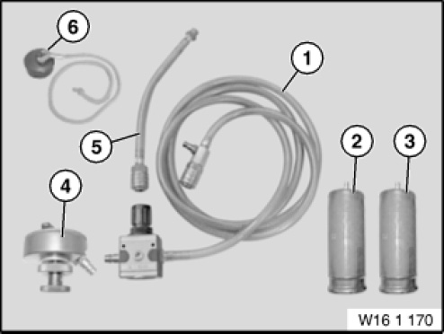

16 1 170 Tester
16 1 170 Tester
0494501
MW

NOTE: (Tester with test adapter) leakage test for fuel tank and fuel filler cap. Remaining inventories will be sold off, followed by discontinuation - then no longer available separately, only via set 0494501 (16 1 170). [Released]
SI number: 01 10 00 (593)
Consisting of:
1 = 0493734 Tester
NOTE: Remaining inventories will be sold off, followed by discontinuation - then no longer available separately, only via set 0494501 (16 1 170). [Discontinued]
2 = 0493735 Adapter
NOTE: (Test adapter for fuel filler cap) Remaining inventories will be sold off, followed by discontinuation - then no longer available separately, only via set 0494501 (16 1 170). [Discontinued]
3 = 0493736 Adapter
NOTE: (Test adapter for fuel filler cap) Remaining inventories will be sold off, followed by discontinuation - then no longer available separately, only via set 0494501 (16 1 170). [Discontinued]
4 = 0493737 Adapter
NOTE: (Test adapter for fuel tank) Remaining inventories will be sold off, followed by discontinuation - then no longer available separately, only via set 0494501 (16 1 170). [Replaced]
5 = 0494557 Hose
NOTE: (Connecting hose) Remaining inventories will be sold off, followed by discontinuation - then no longer available separately, only via set 0494501 (16 1 170). [Discontinued]
6 = 0495345 Plug
NOTE: (Seal plug) Remaining inventories will be sold off, followed by discontinuation - then no longer available separately, only via set 0494501 (16 1 170). [Discontinued]